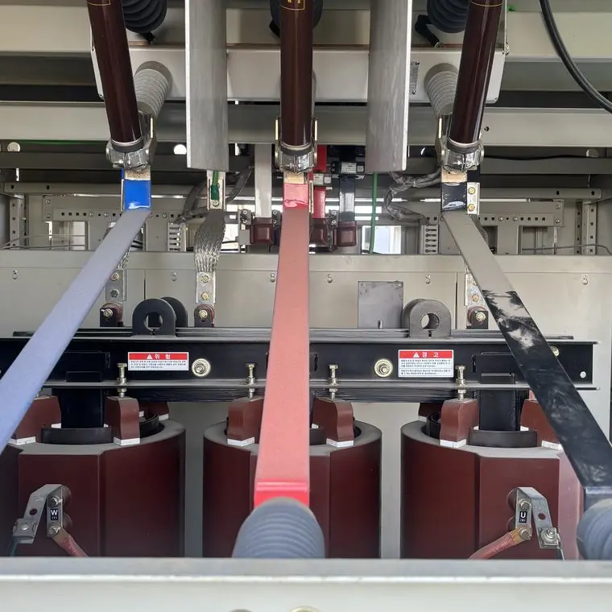
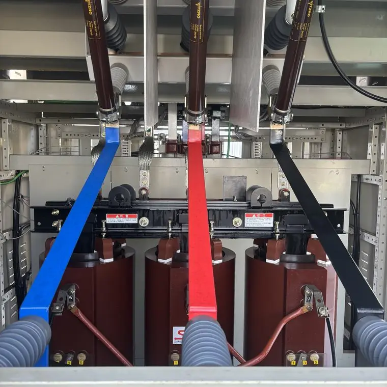

변압기 세척 후 표면 온도는 얼마나 달라지나요?
최종 수정 2026-10-25
공개된 포항공과대학교 변압기 3건의 적외선 열화상 측정에서 작업 전후 표면 온도는 2.8℃에서 11.8℃까지 낮아졌습니다. 작업 전후 동일 부하 기준으로 측정한 값입니다. 모든 설비에서 같은 결과가 나오는 것은 아닙니다.
측정 결과
| 변압기 | 작업 전(℃) | 작업 후(℃) | 변화(℃) |
|---|---|---|---|
| 대학원 아파트 조명 변압기 | 105.3 | 101.0 | −4.3 |
| 공학 2동 비상동력 변압기 | 94.6 | 82.8 | −11.8 |
| 제1동력실 냉방동력 변압기 | 92.5 | 89.7 | −2.8 |
측정은 적외선 열화상 카메라로 했고, 작업 전후 같은 부하 조건을 기준으로 했습니다. 자료는 시공 업체가 공개한 것입니다.


결과를 어떻게 읽어야 하나요?
세 건의 감소 폭은 −2.8℃에서 −11.8℃로 차이가 큽니다. 설비의 오염 정도와 조건에 따라 결과가 달라질 수 있으며, 모든 변압기에서 같은 결과가 나온다고 볼 수 없습니다.
분진이 쌓이면 방열에 불리하게 작용할 수 있어, 세척 전후 표면 온도는 관리 지표로 참고할 수 있습니다.
건식 변압기도 세척하나요?
시공 업체의 공개 사례에는 건식 변압기와 모선의 절연 세척 사진이 포함되어 있습니다. 변압기 종류와 용량에 따라 작업 범위가 다르므로 사진과 정보를 보내 주시면 확인합니다.
내 변압기도 확인하려면?
작업 전후 열화상 측정이 필요하면 견적 문의 때 함께 요청하세요. 가능 여부와 범위는 현장에 따라 안내됩니다.
자주 묻는 질문
변압기를 세척하면 온도가 반드시 내려가나요?
아닙니다. 공개된 3건에서는 모두 낮아졌지만 감소 폭은 −2.8℃에서 −11.8℃로 달랐습니다. 설비와 오염 정도에 따라 결과는 다릅니다.
이 수치는 어떻게 측정했나요?
적외선 열화상 카메라로 작업 전후 같은 부하 기준에서 측정했습니다.
설비 사진과 정보를 남기시면 확인 후 견적을 안내해 드립니다.
무료 견적 문의하기이 글은 시공 업체가 공개한 자료와 일반적인 전기설비 관리 상식을 바탕으로 작성했습니다. 설비별 적용 여부와 결과는 현장 확인 후 달라질 수 있습니다.